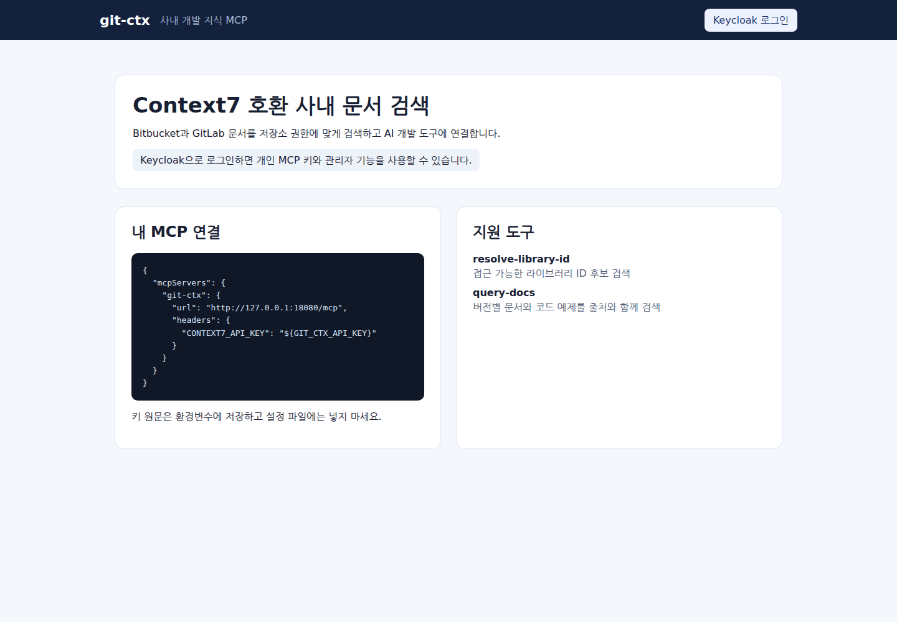

Complete Security & ACL Permission Verification
100% verification of Keycloak OIDC and Bitbucket/GitLab ACL at the pre-filtering stage before search candidate generation. Unauthorized source code and documents are never exposed.
Two-stage hybrid search based on Model Context Protocol (MCP). Build enterprise AI development environments without security compromise through robust ACL enforcement, secure parsing, and AST code structure analysis.

git-ctx provides the most accurate and secure knowledge to AI models in on-premise environments with zero external data leakage.
100% verification of Keycloak OIDC and Bitbucket/GitLab ACL at the pre-filtering stage before search candidate generation. Unauthorized source code and documents are never exposed.
resolve-library-id → query-docs/search-code architecture minimizes agent token consumption while injecting only precise context fragments.
Supports find-symbol, trace-dependencies, and find-dependents symbol impact analysis based on Go, Java, TypeScript, Python, and SQL structural parsing.
Combines PostgreSQL tsvector keyword search with on-premise OpenAI-compatible vector search. Auto-fallback to safe-lexical mode on model failure.
Understand transparent operational status through MCP call audit logs, step-by-step acceptance/rejection diagnostics, latency metrics, and explain-search-result.
Provides offline image packaging, K8s Kustomize, Docker Compose, and SQLite/PostgreSQL dual recovery modes even in internet-disconnected environments.
Rich suite of tools ready for immediate use in modern AI development tools including Cursor, Claude Desktop, and Antigravity.
Precisely searches code across all internal repositories within user ACL scope by combining keyword/remote Code Search API and vector search — no Library ID required.
{
"jsonrpc": "2.0",
"method": "tools/call",
"params": {
"name": "search-code",
"arguments": {
"query": "Keycloak OIDC JWT token validation",
"limit": 5
}
},
"id": 1
}Maps project or repository names the agent wants to explore to normalized Library IDs (e.g., project/repo/main) and verifies access permissions.
{
"jsonrpc": "2.0",
"method": "tools/call",
"params": {
"name": "resolve-library-id",
"arguments": {
"libraryName": "git-ctx",
"query": "authentication adapter"
}
},
"id": 2
}Instantly extracts specific class, interface, method, and struct definitions along with comment context from Go AST, Java, TypeScript, Python, and SQL parsing results.
{
"jsonrpc": "2.0",
"method": "tools/call",
"params": {
"name": "find-symbol",
"arguments": {
"symbol": "BitbucketAdapter",
"language": "go"
}
},
"id": 3
}Compares changes between two branches/tags at the symbol level and calculates their cascading impact on other code in the repository.
{
"jsonrpc": "2.0",
"method": "tools/call",
"params": {
"name": "compare-refs",
"arguments": {
"libraryId": "hkjang/git-ctx",
"baseRef": "main",
"targetRef": "feature/oidc-pkce"
}
},
"id": 4
}Returns a summarized MAP object containing the repository's language distribution, core entrypoints, main package structure, and configuration file conventions.
{
"jsonrpc": "2.0",
"method": "tools/call",
"params": {
"name": "get-repository-map",
"arguments": {
"libraryId": "hkjang/git-ctx"
}
},
"id": 5
}Traces import and call relationships, database table associations of specific files or modules to compose code propagation graphs as visualizable data.
{
"jsonrpc": "2.0",
"method": "tools/call",
"params": {
"name": "trace-dependencies",
"arguments": {
"libraryId": "hkjang/git-ctx",
"filePath": "internal/mcp/server.go"
}
},
"id": 6
}Security-first modular architecture from request reception through ACL authorization to 2-stage knowledge refinement
MCP client requests from Cursor, Antigravity, Claude Desktop, etc.
Keycloak Bearer / API Key authentication and Streamable HTTP communication
Bitbucket 6.9.1 / GitLab ACL pre-filtering and incremental collection
BM25 + Vector + Rerank and AST symbol graph context extraction
Start the on-premise server and connect MCP clients with just two environment variable settings.
Start the server by specifying the long-term recovery key (GIT_CTX_RECOVERY_KEY) and DB connection DSN.
export GIT_CTX_RECOVERY_KEY="$(openssl rand -base64 48)"
export GIT_CTX_DB_DSN='file:git-ctx.db?_foreign_keys=on&_busy_timeout=5000'
# Run Go binary or Docker container
go run ./cmd/git-ctxLog into the admin console using backups/bootstrap-admin.token generated on first launch, then connect Keycloak OIDC.
curl -H "Authorization: Bearer $(cat backups/bootstrap-admin.token)" \
http://localhost:4747/api/v1/admin/settingsRegister the git-ctx MCP server with your agent using the issued MCP API Key.
{
"mcpServers": {
"git-ctx": {
"url": "http://localhost:4747/mcp",
"headers": {
"Authorization": "Bearer YOUR_MCP_API_KEY"
}
}
}
}Find answers to key questions about deploying and operating git-ctx.
git-ctx is an on-premise knowledge platform that indexes source code and developer documentation from on-premise Bitbucket Server 6.9.1 and GitLab, delivering Context7-compatible MCP (Model Context Protocol) to AI agents. It enables developer AI agents to leverage the entire internal codebase and document context in real time without any code leaving the enterprise network.
Instead of loading entire repositories into tokens, Stage 1 resolve-library-id discovers target repos/versions, and Stage 2 query-docs/search-code precisely retrieves only needed code chunks and context. This reduces LLM prompt costs by up to 90% and maximizes first-call accuracy.
git-ctx synchronizes Keycloak OIDC user accounts and group attributes with Bitbucket/GitLab ACL permissions. User permissions are verified at the pre-filtering stage before search candidate generation, ensuring repositories and source code without access permissions are 100% excluded from search results and AI tokens.
Yes, fully supported. git-ctx has zero dependency on external Context7 servers or internet services, providing offline container image packaging, PostgreSQL/SQLite support, Kubernetes Kustomize manifests, and interfaces compatible with on-premise local LLM/embedding models.
Compatible with all clients following the Model Context Protocol (MCP) standard. Supported across various agent environments including Cursor, Antigravity CLI/IDE, Claude Desktop, and VS Code (Continue/MCP extensions).
Explore git-ctx, the on-premise MCP knowledge platform with zero data leakage concerns.
Visit GitHub Repository